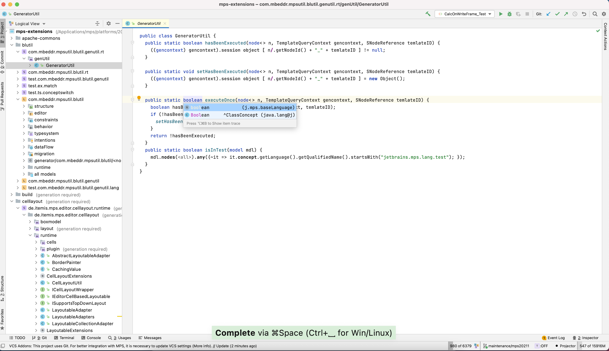
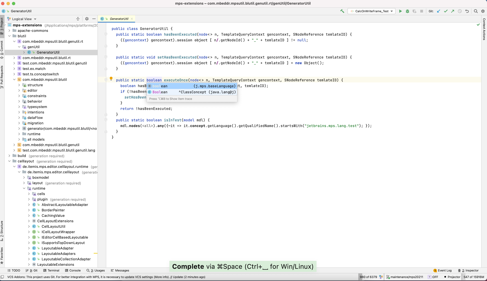

Hover over a green rectangle to show a short description.
When you click the shape, you are redirected to the corresponding documentation when it’s available.

*[nwf] node weave support
Last update:
January 21, 2023
Hover over a green rectangle to show a short description.
When you click the shape, you are redirected to the corresponding documentation when it’s available.

*[nwf] node weave support